Starting to Create Scenes
Specify MV Project
An MV project needs to be open before creating a scene using this software. Click [File] → [Open Project], and specify a [Game.rpgproject] file in the MV game folder.
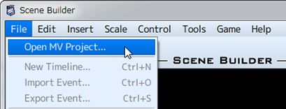
Scene Creation Procedure
Newly created projects will not have pictures.
Place the pictures to use in the img/pictures folder.
* This time, copy the pictures in the img/parallaxes/ folder to the img/pictures folder.
- (1) Add a picture display event
-
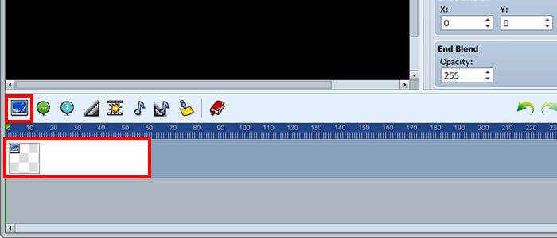Press the [Show Picture Event] button to insert a picture display event into the timeline.
The event will be added with a starting point at the position of the cursor in the timeline.
The cursor can be moved by dragging or clicking. - (2) Settings for Added Show Picture Event
-
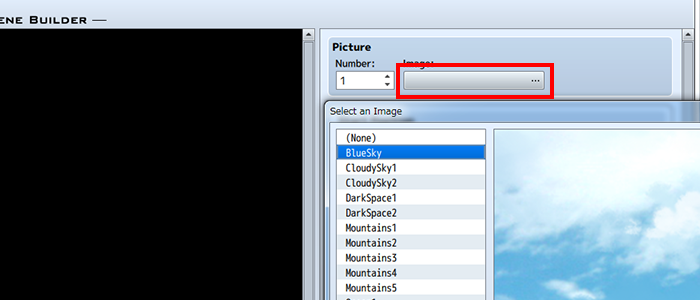Clicking on a Show Picture Event once added to the timeline will display its picture setting properties in the property area.
Click on the [Image] for the [Picture] to select the image that will be displayed in the event. * You can select an image from the img/pictures folder. - (3) Adding a New Lane
-
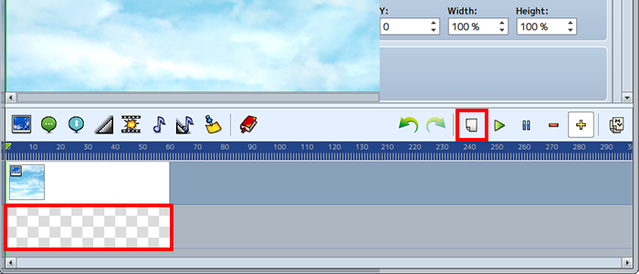Click the ""Add New Lane"" button to add a new row.
- (4) Adding a Show Text Event
-
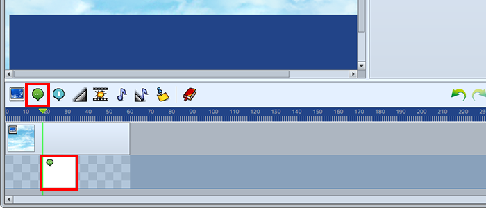Select the added row and drag the cursor to where Show Text Event beings. Click the [Show Text Event] button, and the Show Text Event will be inserted into the row you added.
- (5) Editing a Show Text Event
-
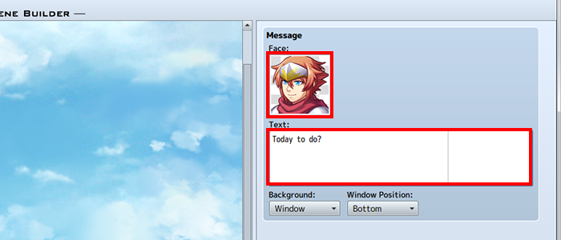Click the Show Text Event added to the timeline to select it, and its text setting properties will be displayed in the property area.
- (6) Preview
-
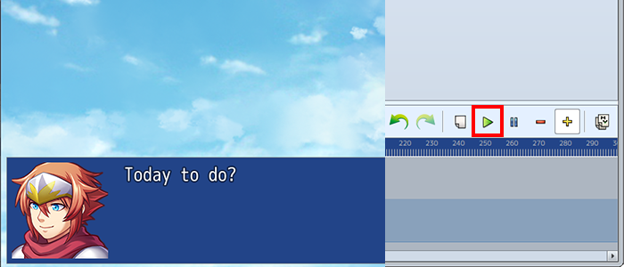[Click the [Playback] button to see the event as it currently is in the preview area. Playback will begin from the cursor's position, so be sure to drag the cursor to the desired position.
Press the [Stop] button to end playback and enable other buttons. - (7) Copy a Timeline as an Event
-
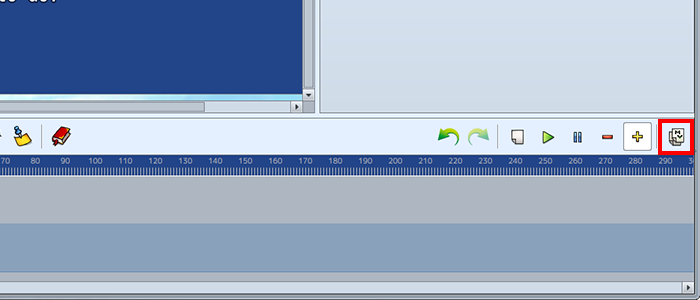Click the [Copy AS Event] button to copy the timeline. The timeline will be copied to the clipboard as an event for RPG Maker MV.
- (8) Paste in MV
-
By [Pasting] in the MV Event Screen, the contents of the event created in Scene Builder will be displayed.
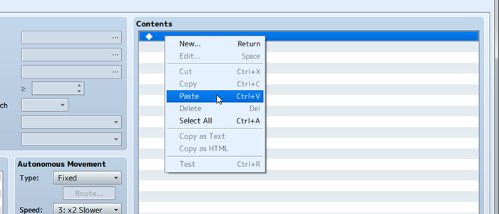 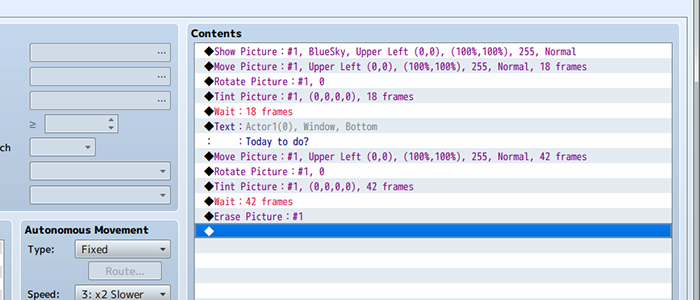Make sure to preview events in MV.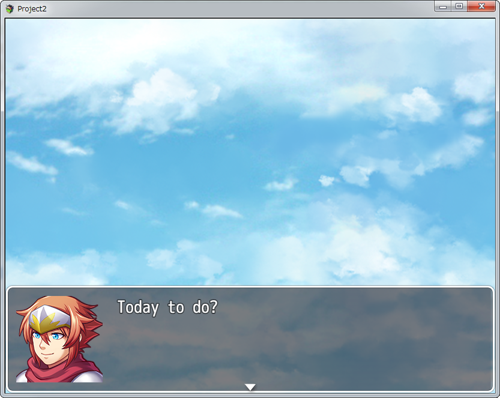